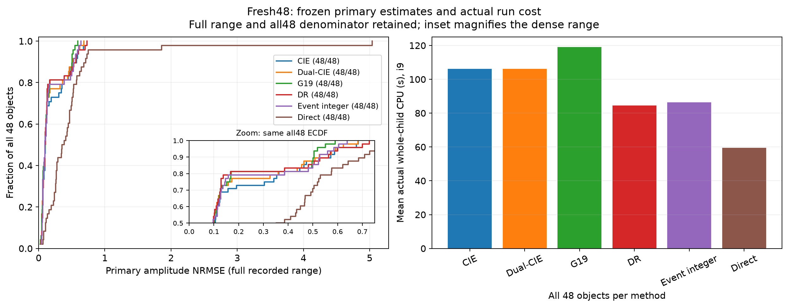
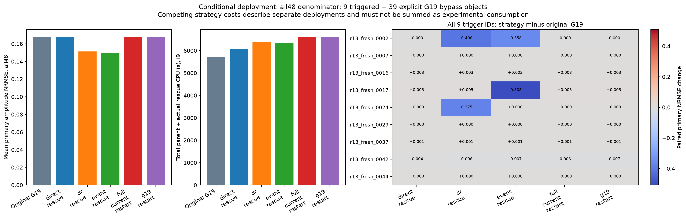
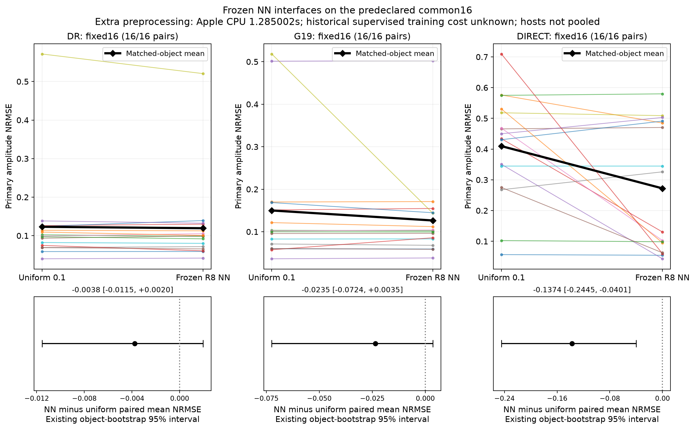
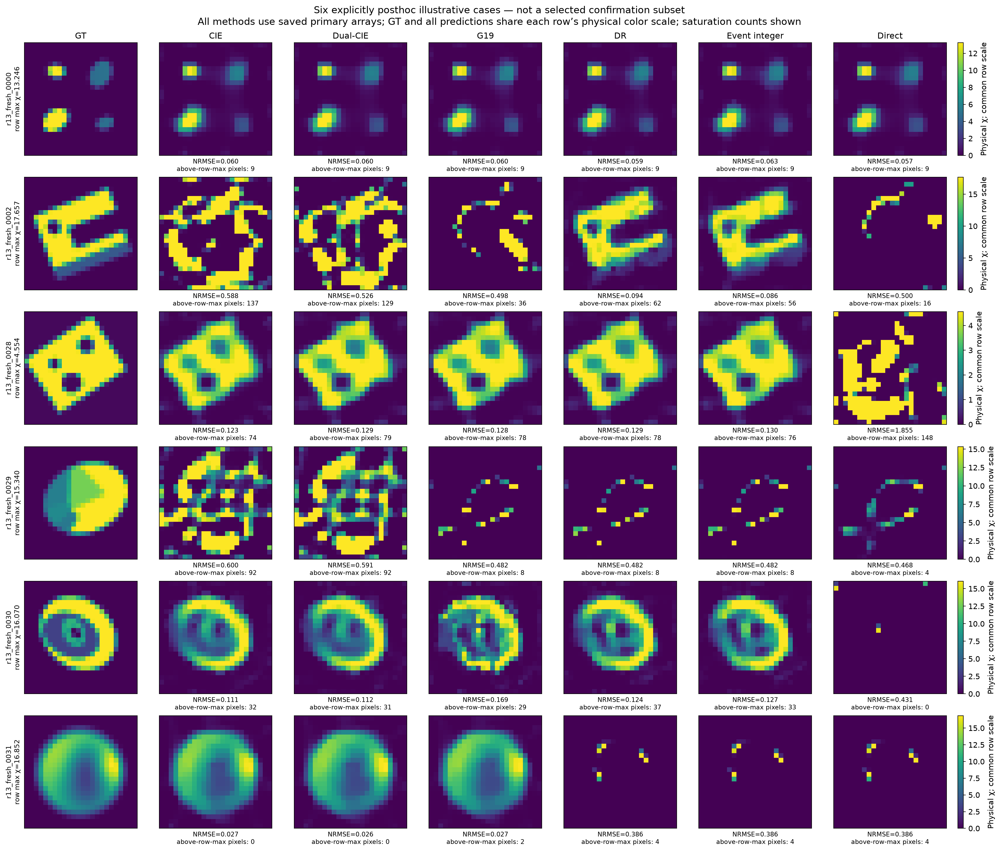

C1 · 开发与表示对照
历史四P核队列；mod50投影/材料步审计及阶段内原生审计按各配置记录。已暴露对象与后续独立对象分开。
48个新独立二维材料、真实三维矢量反演、Fresnel留出预测与经典Austria。DR与G19各有可重复的条件收益；事件阈值解释了换分支，但尚未形成独有的普遍恢复优势。
| 新48｜方法 | 平均NRMSE | 平均实际CPU秒 |
|---|---|---|
| CIE | 0.19454 | 106.15 |
| Dual-CIE | 0.17985 | 106.26 |
| G19 | 0.16758 | 119.08 |
| DR | 0.17672 | 84.50 |
| 整数事件 | 0.18149 | 86.33 |




报告、数学推导、完整分析图集与复现入口。新对象确认、既有开发、经典对象、实测及三维分别列出，完整保留正面和负面结果。
历史四P核队列；mod50投影/材料步审计及阶段内原生审计按各配置记录。已暴露对象与后续独立对象分开。
八P核、每BLAS一线程。统一绝对进程CPU每2秒桶，在下一次完整材料更新后付费审计；原生初始/阶段/终点审计保留。corrector与direct每次已付物理目标评价记录。
桶可能被不可中断操作跨过，不补造审计；全部实际费用保留。M4本地控制另列，不与i9计时直接混合。
历史/公开对象上的开发附件，与新对象确认分开阅读。
仅收录实际存在的封存后分析附件；运行配置本身不代表已评分。
固定子集的机制与冻结NN初值附件；不是另加16个独立材料。
策略分母、触发与旁路以实际分析报告为准。
不同物理域的图集分别列出，不合并材料指标。
按真实目录列出，不从文件名推断算法优劣。
以下附件已公开并读回核对。大文件分片按编号二进制连接；下载和解压建议使用外置盘。初次失败、恢复来源与规范结果分别保留，勿覆盖混用。
| 原始附件 | 字节 | 下载分片（依次连接） |
|---|---|---|
| physics_v1_recovered_full_results_v2.zip | 270,610,555 | physics_v1_recovered_full_results_v2.zip |
| physics_v1_full_results.zip | 75,001,752 | physics_v1_full_results.zip |
| physics_recovery_v1_full_results.zip | 195,739,960 | physics_recovery_v1_full_results.zip |
| confirmation_online_controls16_full_results.zip | 211,082,677 | confirmation_online_controls16_full_results.zip |
| representation_v1_full_results.zip | 78,621,625 | representation_v1_full_results.zip |
| development_v2_full_results.zip | 47,352,708 | development_v2_full_results.zip |
| confirmation_local_reference16_full_results.zip | 603,921,051 | confirmation_local_reference16_full_results.zip |
| development_v4_local_full_results.zip | 3,311,325 | development_v4_local_full_results.zip |
| confirmation_rescue48_full_results.zip | 79,327,587 | confirmation_rescue48_full_results.zip |
| confirmation_core48_full_results.zip | 1,556,073,844 | confirmation_core48_full_results.zip.part001 · confirmation_core48_full_results.zip.part002 |
| confirmation_mechanism16_full_results.zip | 627,459,283 | confirmation_mechanism16_full_results.zip |
| development_v1_full_results.zip | 114,088,735 | development_v1_full_results.zip |
| confirmation_local_trf16_full_results.zip | 18,430,026 | confirmation_local_trf16_full_results.zip |
| development_v3_local_full_results.zip | 15,481,012 | development_v3_local_full_results.zip |
| runtime_confirmation_C2.zip | 68,607,341 | runtime_confirmation_C2.zip |
| runtime_confirmation_C2_final.zip | 68,607,527 | runtime_confirmation_C2_final.zip |
| runtime_development_v1.zip | 2,997,313 | runtime_development_v1.zip |
| runtime_online_controls_C3.zip | 10,871,745 | runtime_online_controls_C3.zip |
| runtime_physics_dependency_C4.zip | 9,458 | runtime_physics_dependency_C4.zip |
| runtime_refinement_v2.zip | 26,031,359 | runtime_refinement_v2.zip |
| runtime_refinement_v2_final.zip | 26,040,908 | runtime_refinement_v2_final.zip |
| max-struct-r13-postseal-inputs-sources.zip | 129,375,446 | max-struct-r13-postseal-inputs-sources.zip |
| max-struct-r13-postseal-analysis-tables.zip | 442,434,501 | max-struct-r13-postseal-analysis-tables.zip |